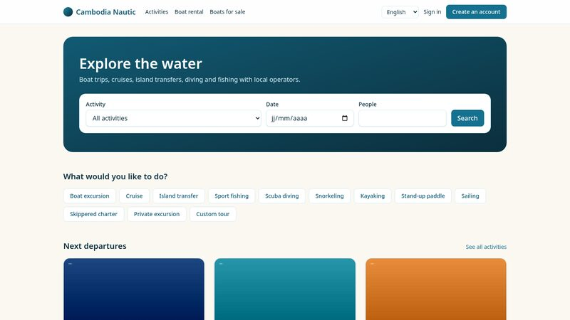
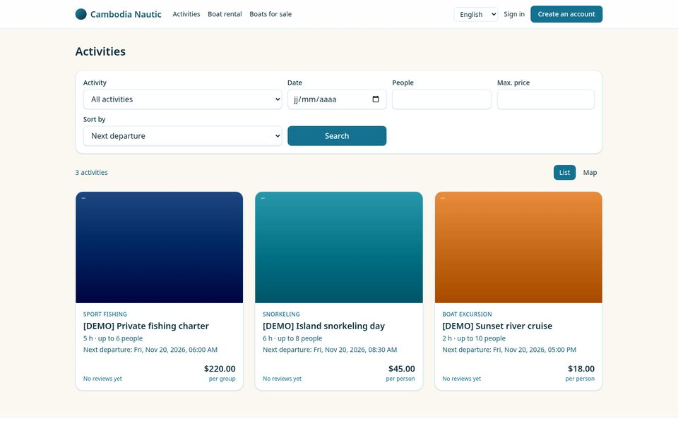
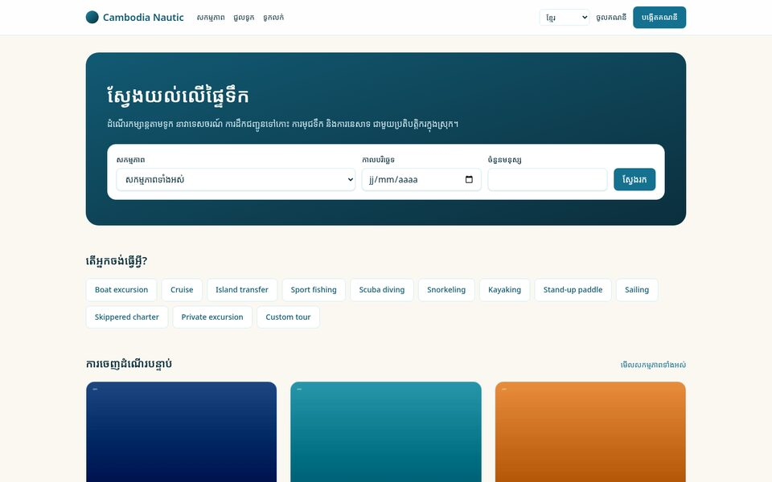
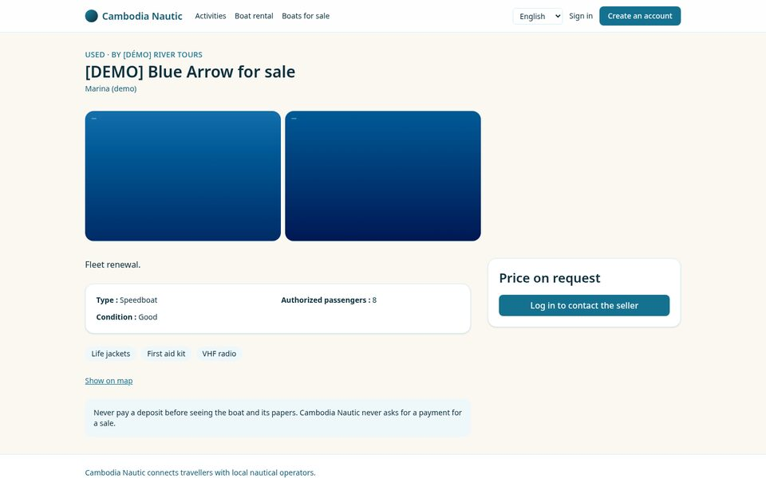
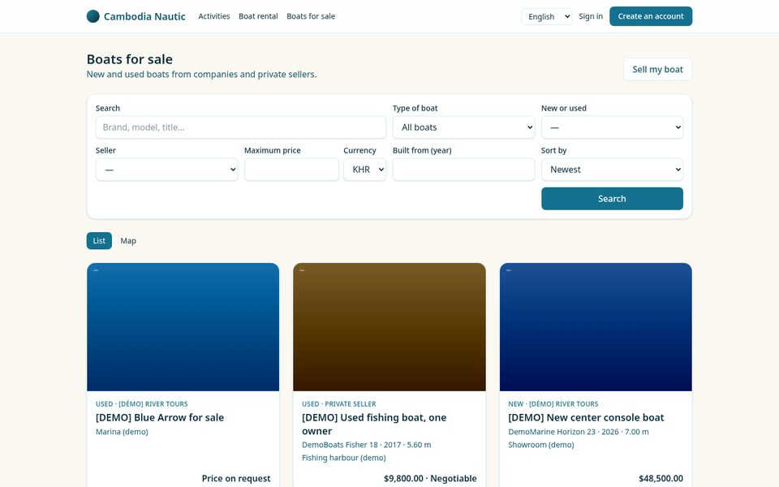

Cambodia Nautic
Every version of this page since 19 Nov 2026, newest first: what changed, and the captures and videos as the page showed them at the time.
Chaque version de cette page depuis le 19 nov. 2026, de la plus récente à la plus ancienne : ce qui a changé, et les captures et vidéos telles que la page les montrait à l’époque.
គ្រប់កំណែនៃទំព័រនេះ តាំងពីថ្ងៃទី 19 វិច្ឆិកា 2026 ពីថ្មីបំផុតទៅចាស់៖ អ្វីដែលបានផ្លាស់ប្តូរ និងរូបថតអេក្រង់ និងវីដេអូ ដូចដែលទំព័របានបង្ហាញនៅពេលនោះ។
Nothing on this page has been regenerated: every capture and video is the file the site published at the time, recovered from its Git history. What the site never published is not here. Since 21 November 2026, every change to the project page adds a version here, and the captures, videos and Last changes it replaces are kept.Rien sur cette page n’a été régénéré : chaque capture et chaque vidéo est le fichier que le site publiait à l’époque, retrouvé dans son historique Git. Ce que le site n’a jamais publié n’y figure pas. Depuis le 21 novembre 2026, chaque changement de la page du projet ajoute ici une version, et les captures, vidéos et derniers changements qu’il remplace sont conservés.គ្មានអ្វីនៅលើទំព័រនេះត្រូវបានបង្កើតឡើងវិញទេ៖ រូបថតអេក្រង់ និងវីដេអូនីមួយៗ គឺជាឯកសារដែលគេហទំព័របានផ្សាយនៅពេលនោះ ដែលបានយកមកវិញពីប្រវត្តិ Git របស់វា។ អ្វីដែលគេហទំព័រមិនដែលផ្សាយ មិនមាននៅទីនេះទេ។ តាំងពីថ្ងៃទី 21 ខែវិច្ឆិកា ឆ្នាំ 2026 ការផ្លាស់ប្តូរនីមួយៗនៃទំព័រគម្រោង បន្ថែមកំណែមួយនៅទីនេះ ហើយរូបថតអេក្រង់ វីដេអូ និងការផ្លាស់ប្តូរចុងក្រោយ ដែលវាជំនួស ត្រូវបានរក្សាទុក។
From the latest to the first.De la plus récente à la première.ពីកំណែចុងក្រោយ ដល់កំណែដំបូង។
-
Seven languagesSept langues7 ភាសា
The page catches up with the repository: Vietnamese and Lao bring the platform to seven languages; official emergency numbers and the companies’ safety instructions, scooters, motorbikes, quads and buggies for rent, accessibility checks on the site and in the app, the app’s tablet layout, demo photos with their credits, and the new figures (214 API operations, 593 API tests, 143 app tests). Last changes now run to 23 November 2026.
La page rattrape le dépôt : le vietnamien et le lao portent la plateforme à sept langues ; les numéros d’urgence officiels et les consignes de sécurité des entreprises, la location de scooters, motos, quads et buggies, les contrôles d’accessibilité du site et de l’application, la mise en page tablette de l’application, les photos de la démo et leurs crédits, et les nouveaux chiffres (214 opérations d’API, 593 tests de l’API, 143 tests de l’application). Les Derniers changements vont désormais jusqu’au 23 novembre 2026.
ទំព័រនេះធ្វើបច្ចុប្បន្នភាពតាម repository៖ ភាសាវៀតណាម និងឡាវ នាំវេទិកាឱ្យមាន 7 ភាសា លេខសង្គ្រោះបន្ទាន់ផ្លូវការ និងការណែនាំសុវត្ថិភាពរបស់ក្រុមហ៊ុន ការជួលម៉ូតូស្កូតឺ ម៉ូតូ quad និង buggy ការពិនិត្យភាពងាយស្រួលប្រើលើគេហទំព័រ និងក្នុងកម្មវិធី ប្លង់ tablet របស់កម្មវិធី រូបថតសាកល្បង និងឥណទានរបស់វា និងតួលេខថ្មី (ប្រតិបត្តិការ API 214 ការធ្វើតេស្ត API 593 ការធ្វើតេស្តកម្មវិធី 143)។ ការផ្លាស់ប្តូរចុងក្រោយ ឥឡូវរហូតដល់ថ្ងៃទី 23 ខែវិច្ឆិកា ឆ្នាំ 2026។
Taken off the page’s Last changes, kept hereSortis des derniers changements de la page, gardés iciដកចេញពីការផ្លាស់ប្តូរចុងក្រោយនៃទំព័រ រក្សាទុកនៅទីនេះ- A country team with narrower rights
A “Country team” group gives platform staff the data of their own countries and the moderation work; verifying, rejecting, approving, suspending or hiding now needs the right to change, not just to view. In the administration, invoices and links to companies, people, places and countries stay within the staff member’s countries, and only a super-administrator can change a company’s verification status and subscription or change and delete staff accounts. A security review also limited each list of the new platform dashboard to staff allowed to see it, and HTML e-mails turn only the site’s own addresses into links.
- A waiting list for full departures
On the site and in the app, a customer can join the waiting list of a full departure. Seats that free up are held for the first request that fits, announced by notification, push and e-mail, and passed to the next person when the offer expires; when a company raises a departure’s capacity, the new seats go to the waiting list first. Companies see who is waiting and how many seats are held, and their dashboard now shows how full each activity is, with a CSV export of departures that holds no amounts and no customer details.
- Declared returns, overdue alerts and GPS tracks
The crew or the shore team declare when a trip leaves, how many people are on board and when it is back; if a boat is not back after its planned end plus a margin, they get a single alert with the captain’s phone number. From the app, the crew can record the trip’s GPS track, kept even without a network and shown in the professional space; tracks are deleted after a year, and the area map and the itinerary can be saved before leaving for offline use. A “My company” space in the app gives the shore team the day’s bookings, payment on site with a receipt, messages and the boats at sea, late ones first — all presented as a management aid, never as a distress device.
- Ports and services, favourites and messages
Companies can propose listings for marinas, pontoons, moorings, boatyards, fuel and chandlery; the platform team reviews them, and anyone can search them by type, service, text or distance, on the site and in the app. Customers can keep favourite activities, rentals and boats for sale, and exchange messages with the company about a booking until 30 days after the trip. A written procedure and an end-to-end test with Thailand (baht, Bangkok time, 7% VAT) show that a new country opens without code changes; planned countries stay hidden from the public.
- Lighter photos, browser tests and launch preparation
Every photo now has a 480 px and a 1280 px version, lists load their small images only when needed, and public API answers are cached for a minute, never for a signed-in request. Browser tests (Playwright) follow the main journeys on a computer and a phone, now also in CI; they led to a fix for the header and the professional space overflowing a phone screen, and an automated check finds no WCAG 2.1 AA violation on the main pages. For the launch, the site has a privacy policy and a legal notice in five languages, a sitemap and sharing previews, and the app has its store listings in five languages.
- The mobile app, notifications and invoices
The Flutter app for Android and iOS arrived with activities, boat rental, quotes, boats for sale, reviews and the map; bookings and the crew’s passenger lists stay readable without a network. An inbox of notifications, on the site and in the app and also sent as push notifications, opens the screen concerned. Companies now issue invoices and credit notes numbered without gaps, and anyone can delete their own account from the site or the app.
- Une équipe pays aux droits resserrés
Un groupe « Country team » donne à l’équipe de la plateforme les données de ses propres pays et la modération ; vérifier, rejeter, approuver, suspendre ou masquer exige désormais le droit de modifier, et non plus seulement celui de voir. Dans l’administration, les factures et les liens vers les entreprises, les personnes, les lieux et les pays restent limités aux pays de l’équipier, et seul un super-administrateur peut changer le statut de vérification et l’abonnement d’une entreprise, ou modifier et supprimer les comptes de l’équipe. Une revue de sécurité a aussi réservé chaque liste du nouveau tableau de bord de la plateforme à ceux qui ont le droit de la voir, et les courriels HTML ne transforment en liens que les adresses du site.
- Une liste d’attente pour les départs complets
Sur le site et dans l’application, on peut s’inscrire sur la liste d’attente d’un départ complet. Les places libérées sont retenues pour la première demande qui tient, annoncées par notification, push et courriel, puis proposées à la suivante si l’offre expire ; quand une entreprise augmente la capacité d’un départ, les nouvelles places vont d’abord à la liste d’attente. Les entreprises voient qui attend et combien de places sont retenues, et leur tableau de bord montre désormais le remplissage de chaque activité, avec un export CSV des départs sans montants ni données de clients.
- Retours déclarés, alertes de retard et traces GPS
L’équipage ou l’équipe à terre déclarent le départ d’une sortie, le nombre de personnes à bord et le retour ; si un bateau n’est pas rentré après la fin prévue plus une marge, ils reçoivent une seule alerte avec le téléphone du capitaine. Depuis l’application, l’équipage peut enregistrer la trace GPS de la sortie, conservée même sans réseau et consultable dans l’espace professionnel ; les traces sont effacées au bout d’un an, et la carte de la zone et l’itinéraire peuvent être enregistrés avant le départ pour un usage hors connexion. Dans l’application, l’espace « Mon entreprise » donne à l’équipe à terre les réservations du jour, l’encaissement sur place avec reçu, les messages et les bateaux en mer, retards en tête — le tout présenté comme une aide à la gestion, jamais comme un moyen de détresse.
- Ports et services, favoris et messages
Les entreprises peuvent proposer des fiches de marinas, pontons, mouillages, chantiers, carburant et accastillage ; l’équipe de la plateforme les relit, et chacun peut les chercher par type, service, texte ou proximité, sur le site et dans l’application. Les clients gardent en favoris des activités, des locations et des bateaux à vendre, et échangent des messages avec l’entreprise au sujet d’une réservation jusqu’à 30 jours après la sortie. Une procédure écrite et un test de bout en bout avec la Thaïlande (bahts, heure de Bangkok, TVA à 7 %) montrent qu’un nouveau pays s’ouvre sans toucher au code ; les pays prévus restent invisibles du public.
- Photos allégées, tests de navigateur et préparation du lancement
Chaque photo existe désormais en 480 px et en 1280 px, les listes ne chargent leurs vignettes qu’au besoin, et les réponses publiques de l’API sont réutilisables pendant une minute, jamais pour une requête authentifiée. Des tests de navigateur (Playwright) suivent les parcours principaux sur ordinateur et sur téléphone, désormais aussi en CI ; ils ont fait corriger l’en-tête et l’espace professionnel qui débordaient de l’écran d’un téléphone, et un contrôle automatique ne relève aucune violation WCAG 2.1 AA sur les pages principales. Pour le lancement, le site a une politique de confidentialité et des mentions légales en cinq langues, un plan du site et des aperçus de partage, et l’application ses fiches pour les magasins en cinq langues.
- L’application mobile, les notifications et les factures
L’application Flutter pour Android et iOS est arrivée avec les activités, la location de bateaux, les devis, les bateaux à vendre, les avis et la carte ; les réservations et les listes de passagers de l’équipage restent lisibles sans réseau. Une boîte de réception des notifications, sur le site et dans l’application, doublée de notifications push, ouvre l’écran concerné. Les entreprises émettent désormais des factures et des avoirs à numérotation continue, et chacun peut supprimer son propre compte depuis le site ou l’application.
- ក្រុមប្រចាំប្រទេស ជាមួយសិទ្ធិតឹងរ៉ឹងជាងមុន
ក្រុម “Country team” ផ្តល់ឱ្យបុគ្គលិកវេទិកា នូវទិន្នន័យនៃប្រទេសរបស់ខ្លួន និងការងារត្រួតពិនិត្យខ្លឹមសារ ហើយការផ្ទៀងផ្ទាត់ ការបដិសេធ ការអនុម័ត ការផ្អាក ឬការលាក់ ឥឡូវតម្រូវឱ្យមានសិទ្ធិកែប្រែ មិនមែនត្រឹមតែសិទ្ធិមើលទៀតទេ។ នៅក្នុងផ្នែកគ្រប់គ្រង វិក្កយបត្រ និងតំណទៅក្រុមហ៊ុន បុគ្គល ទីកន្លែង និងប្រទេស ត្រូវបានកំណត់ត្រឹមប្រទេសរបស់បុគ្គលិកនោះ ហើយមានតែ super-administrator ប៉ុណ្ណោះ ដែលអាចប្តូរស្ថានភាពផ្ទៀងផ្ទាត់ និងការជាវរបស់ក្រុមហ៊ុន ឬកែប្រែ និងលុបគណនីបុគ្គលិក។ ការត្រួតពិនិត្យសុវត្ថិភាពមួយក៏បានកំណត់បញ្ជីនីមួយៗនៃផ្ទាំងគ្រប់គ្រងថ្មីរបស់វេទិកា ឱ្យតែបុគ្គលិកដែលមានសិទ្ធិមើលប៉ុណ្ណោះ ហើយអ៊ីមែល HTML បង្កើតតំណតែសម្រាប់អាសយដ្ឋានរបស់គេហទំព័រខ្លួនឯងប៉ុណ្ណោះ។
- បញ្ជីរង់ចាំសម្រាប់ការចេញដំណើរដែលពេញ
នៅលើគេហទំព័រ និងក្នុងកម្មវិធី អតិថិជនអាចចុះឈ្មោះក្នុងបញ្ជីរង់ចាំនៃការចេញដំណើរដែលពេញហើយ។ កៅអីដែលទំនេរវិញ ត្រូវបានរក្សាទុកសម្រាប់សំណើដំបូងដែលត្រូវនឹងចំនួនកៅអីនោះ ដោយជូនដំណឹងតាមប្រអប់ការជូនដំណឹង push និងអ៊ីមែល ហើយត្រូវបានផ្តល់ទៅអ្នកបន្ទាប់ នៅពេលការផ្តល់ជូនផុតកំណត់ ហើយនៅពេលក្រុមហ៊ុនបង្កើនចំនួនកៅអីនៃការចេញដំណើរមួយ កៅអីថ្មីទៅបញ្ជីរង់ចាំមុនគេ។ ក្រុមហ៊ុនឃើញអ្នកដែលកំពុងរង់ចាំ និងចំនួនកៅអីដែលបានរក្សាទុក ហើយផ្ទាំងគ្រប់គ្រងរបស់ពួកគេឥឡូវបង្ហាញកម្រិតពេញនៃសកម្មភាពនីមួយៗ ជាមួយការនាំចេញ CSV នៃការចេញដំណើរ ដោយគ្មានចំនួនទឹកប្រាក់ ឬព័ត៌មានអតិថិជន។
- ការប្រកាសការត្រឡប់មកវិញ ការជូនដំណឹងពេលយឺត និងផ្លូវ GPS
នាវិក ឬក្រុមនៅលើគោក ប្រកាសពេលដំណើរចេញ ចំនួនមនុស្សនៅលើទូក និងពេលត្រឡប់មកវិញ ហើយប្រសិនបើទូកមិនទាន់ត្រឡប់មកវិញ ក្រោយម៉ោងបញ្ចប់ដែលគ្រោងទុក បូករយៈពេលបន្ថែមមួយ ពួកគេទទួលបានការជូនដំណឹងតែមួយដង ជាមួយលេខទូរស័ព្ទរបស់ប្រធានទូក។ ពីកម្មវិធី នាវិកអាចកត់ត្រាផ្លូវ GPS នៃដំណើរ ដែលរក្សាទុកបាន ទោះគ្មានបណ្តាញក៏ដោយ ហើយមើលបានក្នុងផ្នែកសម្រាប់អ្នកជំនាញ ផ្លូវទាំងនេះត្រូវបានលុបក្រោយមួយឆ្នាំ ហើយផែនទីតំបន់ និងផ្លូវធ្វើដំណើរ អាចរក្សាទុកមុនចេញដំណើរ ដើម្បីមើលដោយគ្មានបណ្តាញ។ ក្នុងកម្មវិធី ផ្នែក “ក្រុមហ៊ុនរបស់ខ្ញុំ” ផ្តល់ឱ្យក្រុមនៅលើគោក នូវការកក់ប្រចាំថ្ងៃ ការទទួលប្រាក់នៅនឹងកន្លែងជាមួយបង្កាន់ដៃ សារ និងទូកដែលកំពុងនៅលើទឹក ដោយទូកដែលយឺតនៅខាងលើគេ — ទាំងអស់នេះបង្ហាញជាជំនួយក្នុងការគ្រប់គ្រង មិនដែលជាឧបករណ៍ជូនដំណឹងគ្រោះអាសន្នទេ។
- កំពង់ផែ និងសេវាកម្ម ចំណូលចិត្ត និងសារ
ក្រុមហ៊ុនអាចស្នើព័ត៌មានអំពីកំពង់ចតទូក ផែ កន្លែងចតយុថ្កា រោងជាងទូក ប្រេងឥន្ធនៈ និងបរិក្ខារទូក ដែលក្រុមវេទិកាពិនិត្យ ហើយអ្នកណាក៏អាចស្វែងរកវាតាមប្រភេទ សេវាកម្ម អត្ថបទ ឬចម្ងាយ នៅលើគេហទំព័រ និងក្នុងកម្មវិធី។ អតិថិជនអាចរក្សាទុកសកម្មភាព ការជួល និងទូកសម្រាប់លក់ដែលខ្លួនចូលចិត្ត ហើយផ្ញើសារទៅក្រុមហ៊ុនអំពីការកក់មួយ រហូតដល់ 30 ថ្ងៃក្រោយដំណើរ។ នីតិវិធីជាលាយលក្ខណ៍អក្សរ និងការធ្វើតេស្ត end-to-end ជាមួយប្រទេសថៃ (ប្រាក់បាត ម៉ោងបាងកក VAT 7%) បង្ហាញថា ប្រទេសថ្មីអាចបើកបានដោយមិនចាំបាច់កែកូដ ចំណែកប្រទេសដែលគ្រោងទុក នៅតែមើលមិនឃើញសម្រាប់សាធារណជន។
- រូបថតស្រាលជាងមុន ការធ្វើតេស្តលើ browser និងការរៀបចំដាក់ឱ្យដំណើរការ
រូបថតនីមួយៗឥឡូវមានកំណែ 480 px និង 1280 px បញ្ជីផ្ទុករូបតូចៗតែនៅពេលត្រូវការ ហើយចម្លើយសាធារណៈរបស់ API អាចប្រើឡើងវិញបានរយៈពេលមួយនាទី តែមិនដែលសម្រាប់សំណើដែលបានចូលគណនីទេ។ ការធ្វើតេស្តលើ browser (Playwright) ដើរតាមដំណើរការសំខាន់ៗ លើកុំព្យូទ័រ និងទូរស័ព្ទ ហើយឥឡូវដំណើរការក្នុង CI ផងដែរ ការធ្វើតេស្តទាំងនេះបាននាំឱ្យកែក្បាលទំព័រ និងផ្នែកសម្រាប់អ្នកជំនាញ ដែលធំជាងអេក្រង់ទូរស័ព្ទ ហើយការពិនិត្យស្វ័យប្រវត្តិមិនរកឃើញការបំពាន WCAG 2.1 AA ណាមួយ លើទំព័រសំខាន់ៗទេ។ សម្រាប់ការដាក់ឱ្យដំណើរការ គេហទំព័រមានគោលការណ៍ឯកជនភាព និងព័ត៌មានផ្លូវច្បាប់ ជា 5 ភាសា ផែនទីគេហទំព័រ (sitemap) និងរូបមើលជាមុនពេលចែករំលែក ហើយកម្មវិធីមានព័ត៌មានសម្រាប់ store ជា 5 ភាសា។
- កម្មវិធីទូរស័ព្ទ ការជូនដំណឹង និងវិក្កយបត្រ
កម្មវិធី Flutter សម្រាប់ Android និង iOS បានមកដល់ ជាមួយសកម្មភាព ការជួលទូក សំណើតម្លៃ ទូកសម្រាប់លក់ ការវាយតម្លៃ និងផែនទី ហើយការកក់ និងបញ្ជីអ្នកដំណើររបស់នាវិក នៅតែអាចអានបានដោយគ្មានបណ្តាញ។ ប្រអប់ការជូនដំណឹង នៅលើគេហទំព័រ និងក្នុងកម្មវិធី ដែលក៏ផ្ញើជាការជូនដំណឹង push ផងដែរ បើកអេក្រង់ដែលពាក់ព័ន្ធ។ ឥឡូវក្រុមហ៊ុនចេញវិក្កយបត្រ និងប័ណ្ណឥណទាន ដែលមានលេខរៀងបន្តគ្នាដោយគ្មានចន្លោះ ហើយម្នាក់ៗអាចលុបគណនីរបស់ខ្លួនពីគេហទំព័រ ឬកម្មវិធី។
-
Status by phaseL’état par phaseស្ថានភាពតាមដំណាក់កាល
The page catches up with the repository: the status by phase, coverage and figures.
La page rattrape le dépôt : l’état par phase, la couverture et les chiffres.
ទំព័រនេះធ្វើបច្ចុប្បន្នភាពតាម repository៖ ស្ថានភាពតាមដំណាក់កាល វិសាលភាព និងតួលេខ។
-
Last changesDerniers changementsការផ្លាស់ប្តូរចុងក្រោយ
The page now ends with a summary of the repository’s latest commits, in English, French and Khmer.
La page se termine désormais par un résumé des derniers commits du dépôt, en anglais, en français et en khmer.
ឥឡូវនេះ ទំព័របញ្ចប់ដោយសេចក្តីសង្ខេបនៃ commit ចុងក្រោយរបស់ repository ជាភាសាអង់គ្លេស បារាំង និងខ្មែរ។
-
Its own pageSa propre pageទំព័រផ្ទាល់ខ្លួន
Cambodia Nautic gets its page in English, French and Khmer: the boating platform for South-East Asia, its API, its portal in five languages and its mobile app, and where each phase stands; not online yet.
Cambodia Nautic reçoit sa page en anglais, en français et en khmer : la plateforme nautique pour l’Asie du Sud-Est, son API, son portail en cinq langues et son application mobile, et l’état de chaque phase ; pas encore en ligne.
Cambodia Nautic ទទួលបានទំព័ររបស់ខ្លួន ជាភាសាអង់គ្លេស បារាំង និងខ្មែរ៖ វេទិកាទូកសម្រាប់អាស៊ីអាគ្នេយ៍ API របស់វា វិបផតថលជាប្រាំភាសា និងកម្មវិធីទូរស័ព្ទ ព្រមទាំងស្ថានភាពនៃដំណាក់កាលនីមួយៗ។ មិនទាន់ដាក់ឱ្យប្រើលើអ៊ីនធឺណិតនៅឡើយទេ។
13 captures13 capturesរូបថតអេក្រង់ 13
On the pageSur la pageនៅលើទំព័រ 
On the pageSur la pageនៅលើទំព័រ 
On the pageSur la pageនៅលើទំព័រ 
On the pageSur la pageនៅលើទំព័រ 
On the pageSur la pageនៅលើទំព័រ 
On the pageSur la pageនៅលើទំព័រ 
On the pageSur la pageនៅលើទំព័រ 
On the pageSur la pageនៅលើទំព័រ 
On the pageSur la pageនៅលើទំព័រ 
On the pageSur la pageនៅលើទំព័រ 
On the pageSur la pageនៅលើទំព័រ 
On the pageSur la pageនៅលើទំព័រ 
On the pageSur la pageនៅលើទំព័រ